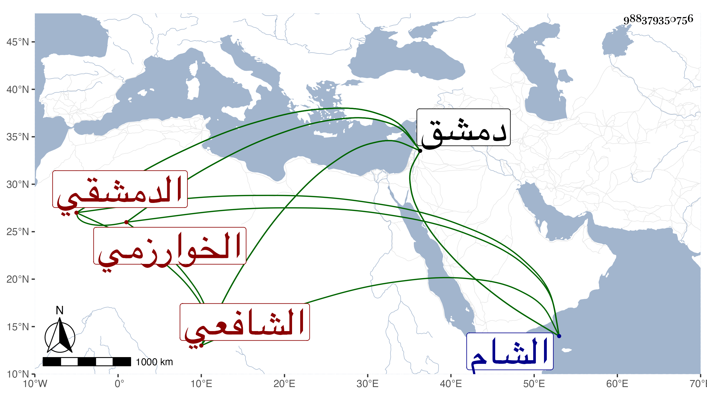

0902Sakhawi.DawLamic.ITO20230111-ara1.EIS1600.988379350756
Biography ID: 988379350756
إبراهيم بن عمر بن عثمان بن علي برهان الدين الخوارزمي الدمشقي الشافعي أخو الشهاب أحمد الآتي وذاك الأكبر ويعرف بابن قرا . رأيته كتب في بعض الاستدعاآت سنة ثلاث وسبعين ومات بدمشق بعد ذلك في عاشر جمادى الأولى سنة ثمان وسبعين وكان صالحا ذا تهجد كثير وصيام وعمامة صغيرة تشبه أبناء الترك وجلالة عند الخاصة والعامة سيما أخوه فإنه كان يجله كثيرا مما هو جدير به بل قال له العلاء البخاري أنت في بركة إبراهيم وحكى الثقة عن أخيه أنه قال له أن الشيخ سليما لما قدم دمشق قيل له في الشام خمارة فامر بجمع الفقراء فاجتمعوا وذهبوا وأنا وإياه معهم ليريقوا ما فيها من الخمر فلما أراق ما فيها وقف بالباب مقبلا بوجهه على من يريد الخروج ومد يديه فوضع كل واحدة على ركن الباب ثم قال اخرجوا فخرج الناس من تحت يديه فجئت وقبلت يده وخرجت فلما جاء أخي رده ثم جاء فرده مرارا فبقيت خائفا عليه فلما لم يبق أحد أمره بالخروج وأمسك بيده ثم أمر شخصا أن يمسك يده وأمر آخر أن يمسك يده الأخرى وأمر آخر أن يمسك ظهره ثم أكب على قدميه وقبلهما .
